Meta-analysis of aging transcriptomes#
All code for tasks described in this report is avaliable in our Jupyter Notebook.
Introduction#
In this project, we reproduce the results of a gene expression meta-analysis performed by Daniel Palmer and colleagues in 2021. In this study transcriptomic signatures associate with ageing were identified for brain, heart and muscle tissues based on the analysis of 127 publicly-available microarray and RNA-Seq datasets from mice, rats, and humans.
Overall, changes in gene expression with age followed the following patterns:
- overexpression of immune and stress response genes with age
- underexpression of metabolic and developmental genes
- overexpression of inflammation, immune response and lysosomes related genes
- underexpression of collagen, energy metabolism (especiallu mitochondrial) genes
- changes in expression of apoptosis genes and cell cycle regulation genes
The outline of analysis pipeline from the original study is the following:
- Linear regression performed for each gene inside each dataset. The slope of the regression corresponds to the direction in change of gene expression with age (if positive - gene is upregulated with age and vice versa)
- Genes for which regression slope is statistically significant are selected
- Meta regression analysis was performed with Cumulative Binomial test
- False discovery rate correction was performed by permutating gene IDs in the original dataset and repeating the meta-regression analysis. Based on this an average percentage of statistically significantly differentially expressed genes was identified - this allowed calculating critical p-value at which FDR was less than 0.05
- Tissue specificity analysis was run with tau index used as a measure of tissue specificity
- Differentially expressed genes (DEGs) that had evidence of association with age across multiple datasets were selected for further analysis
- Enrichment analysis with David and topGO R tool was performed
- dN/dS analysis - ratio of non-synonymous to synonymous substitutions in the sequences of main DEGs in different species. These calculations showed that those genes are predominantly evolutionary conserved across species
- Random Forest ML model on GO terms was built to identify the GO terms that can best predict whether a particular gene will be over- or underexpressed with age
Weak points of the paper#
To detect DEGs that were differentially expressed across multiple datasets, the authors used the cumulative binomial test. In cases where the total dataset number is small (in which the gene was studied), such meta-regression tests are not statistically significant because they don’t reflect the effect size. Additionally, two different data types are explored, RNA-seq and microarray RNA sequencing, which might require additional correction for the specific details of experimental techniques.
Suggestions for approach improvements#
In our project we applied meta-regression using the PyMare package for a higher specificity of the analysis. In this approach we did not select the statistically significant sloped inside each dataset but rather gave all the genes in each dataset as input to the meta-regression analyzer. PyMare itself estimates which of the slope estimates are statistically significant acorss multiple datasets based on:
- list of slope coefficients for eacg dataset
- list of variances for these slopes
- list of samples numbers for each dataset
Results#
Preprocessing of the gene expression data#
For the sake of time we decided to focus our analysis on brain, heart, and muscle tissues from mice only. From the data avaliable on the github repository we selected 27 mice microarray datasets originated from brain, heart and muscle (12 samples for brain, 5 for heart and 10 for muscle). Each dataset contains samples from mice of several age groups (usually several individuals inside each group). For each of these samples expression levels of around 20000 genes are studied.
Quality control - PCA#
To explore the similarity of the samples within each dataset and each age group we applied the Principal Component Analysis (PCA) method of data clustering. The samples from different ages were, however, intermingled with each other so it was impossible to remove some samples due to out-clustering.
Statistical testing#
To estimate differencially expressed genes (DEGs) we conducted linear regression analysis for all the datasets using statsmodels.OLS python function. The regression equation was as following:
Where Y is the expression of of gene j in sample i, β0j is the intercept for gene j, β1j is the regression slope for gene j, Agei is the age of the indidividual studies in the sample, and εij is the error term.
The slope of this regression identifies the direction of differencial expression with age. 0.05 p-value cut-off was then used to identify the significance of the coefficients (used only for binomial testing) and the coefficients variances were calculated using the same package (used ofr PyMare meta-regression).
Meta-analysis of the datasets#
To identify genes differentially expressed in tissue across all datasets we applied meta-regression function from the PyMare package. This function takes as input the estimated regression coefficients for individual datasets and the variances for these coefficients as well as dataset sizes. It produces weighted estimates for gene expression change direction with age(called total effect), taking into account the level of uncertainty, and number of datasets analyzed.
We conducted such analysis for each of the tissues as well as for all three tissues together. In the latter case we also passed the tissue parameters as extra cofounder parameter.
GO enrichment analysis#
Gene Onthology enrichment analysis was done with gseapy python package to identify functional categories for the obtained DEGs. In the genes overexpressed with age across multiple datasets in the brain, the enrichment terms are the following:
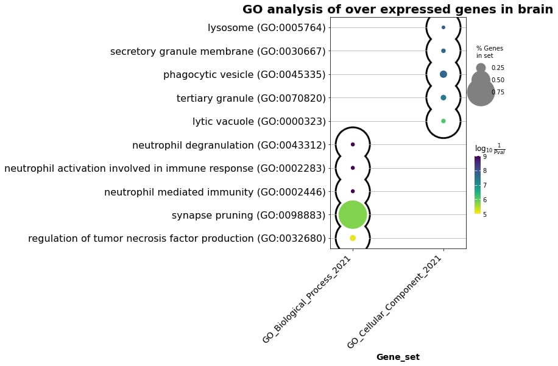
Fig. 1 Enrichment terms in the brain overexpressed genes.#
In the muscle overexpressed genes with age, the picture is the following:
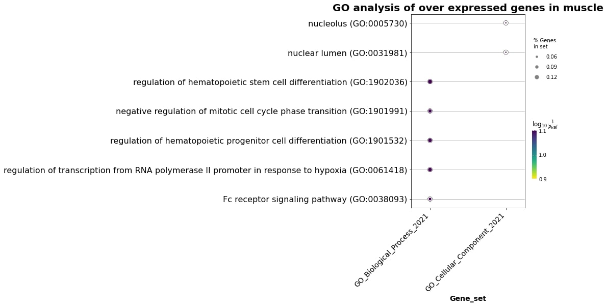
Fig. 2 Enrichment terms in the muscle overexpressed genes.#
For heart overexpressed genes:
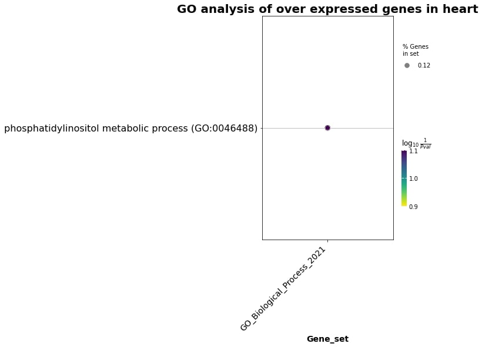
Fig. 3 Enrichment terms in the heart overexpressed genes.#
For heart underexpressed:
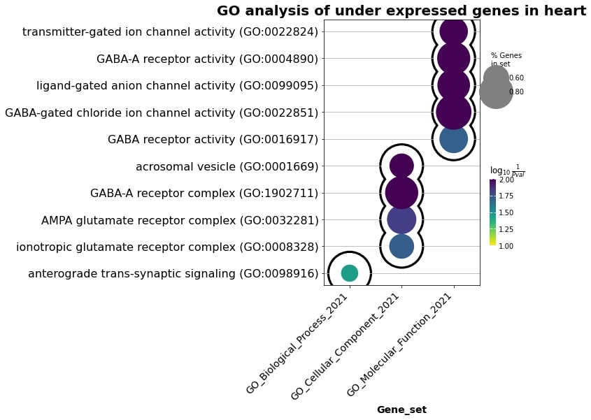
Fig. 4 Enrichment terms in the heart underexpressed genes.#
Enriched terms in the genes differentially overexpressed with age across multiple datasets in all three tissues are:
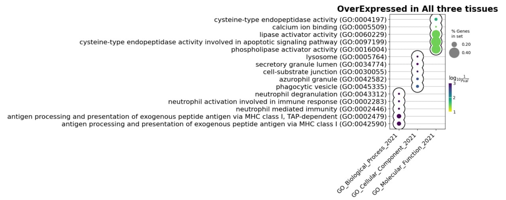
Fig. 5 Enrichment terms overexpressed genes in all tissues.#
While for underexpressed:
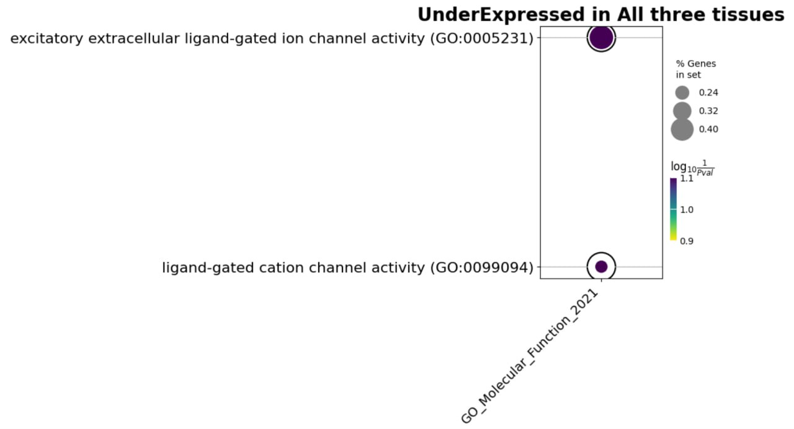
Fig. 6 Enrichment terms underexpressed genes in all tissues.#
Gene expression comparison in Brain, Heart and Muscle#
Upregulated and Downregulated genes common between Brain, Heart and Muscle:#
We carried out intersection analysis of Upregulated and Downregulated genes that are common between all three tissues. Five genes (ACER2, RHPN2, CD2AP, RRAGC, SKAP2) were overexpressed whereas four genes (CRB3, HOXD12, UBN1, SLC6A3) were underexpressed in Brain, Heart and Muscle.
Upregulated genes:#
Description of common upregulated genes in Brain, Heart and Muscle tissues 1. ACER2: may lead to changes in the metabolism of ceramide and other lipid molecules
2. RHPN2: may affect cell adhesion, migration, and signaling, which could impact various physiological and pathological processes
3. CD2AP: may disrupt the structure and function of the glomerular filtration barrier in the kidney, leading to proteinuria, inflammation, and progressive kidney damage.
4. RRAGC: may affect the activity of the mTORC1 signaling pathway, which plays a key role in regulating cell growth, autophagy, and metabolism
5. SKAP2: Differential expression of SKAP2 may influence T-cell activation and migration, which are essential for immune surveillance and defense against infections and cancer
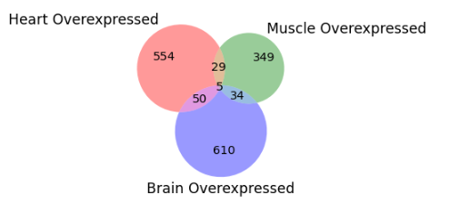
Fig. 7 Upregulated genes intersection in all tissues.#
Downregulated genes:#
Description of common upregulated genes in Brain, Heart and Muscle tissues
1. CRB3: encodes a protein that is important for maintaining the structure and function of epithelial cells
2. HOXD12: member of the homeobox gene family that is involved in regulating embryonic development and differentiation
3. UBN1: involved in chromatin remodeling, which is important for regulating gene expression.
4. SLC6A3: encodes a dopamine transporter protein that is involved in the regulation of dopamine signaling in the brain
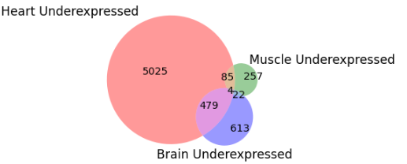
Fig. 8 Downregulated genes intersection in all tissues.#
GenAge intersection analysis#
From GenAge database we have downloaded the genes associated with age. The set of genes were intersected with Upregulated and Downregulated genes (from the anlaysis of three tissues all together) identified in our study.
Upregulated genes intersection with GenAge:#
In the upregulated set of genes seven genes were reported in GenAge.
1. EFEMP1: encodes a protein that is involved in cell adhesion and signaling
2. TRP53BP1: This gene is involved in the DNA damage response and plays a role in maintaining genomic stability
3. PAWR: involved in the regulation of apoptosis (programmed cell death) and has been implicated in various physiological and pathological processes, including cancer and neurodegeneration
4. CDKN1A: This gene encodes a protein called p21, which is a key regulator of cell cycle progression and DNA damage response
5. GRN: encodes a protein called progranulin, which is involved in various physiological processes, including inflammation, wound healing, and neuronal development
6. GPX4: encodes an enzyme called glutathione peroxidase 4, which plays a critical role in protecting cells from oxidative stress
7. HNRNPD: This gene encodes a protein called heterogeneous nuclear ribonucleoprotein D, which is involved in RNA processing and gene expression regulation
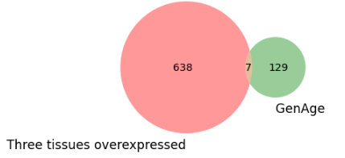
Fig. 9 Genage intersection with upregulated genes in all tissues.#
Downregulated genes intersectio with GenAge:#
Incase of downregulated genes only three genes were reported in GenAge database.
1. POU1F1 (Pit-1): a transcription factor that plays a critical role in the development and function of the pituitary gland
2. FOXM1: a transcription factor that regulates the expression of genes involved in cell cycle progression, DNA replication, and repair
3. NUDT1 (nucleoside diphosphate-linked moiety X motif 1): an enzyme involved in nucleotide metabolism and DNA damage response
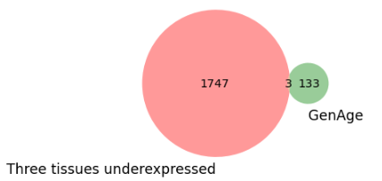
Fig. 10 Genage intersection with downregulated genes in all tissues.#
Discussion#
The list of differentially expressed genes across aging#
According to the results of 2021 original paper all tissues and every tissue studied consistently overexpressed the following genes:
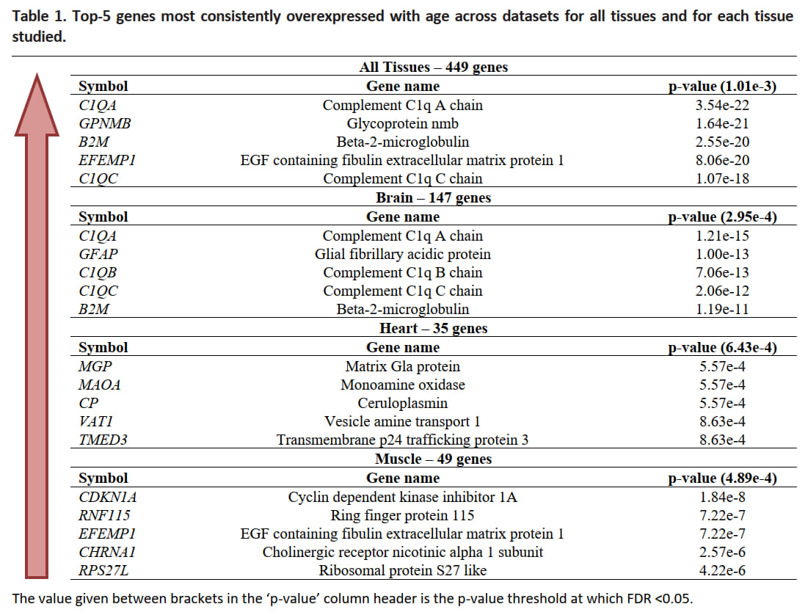
Fig. 11 Table of the top-5 genes most consistently overexpressed with age across datasets for all tissues and for each tissue studied [1].#
And for underexpressed genes the results are the following:
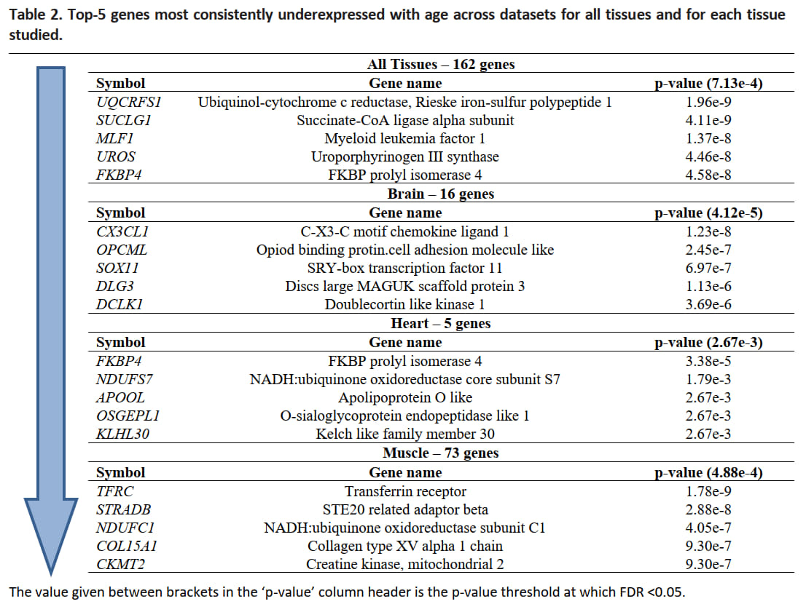
Fig. 12 Table of the top-5 genes most consistently underexpressed with age across datasets for all tissues and for each tissue studied [1].#
According to our findings, immune system activation genes were overexpressed in the brain. Differentiation-related genes were overexpressed in muscles, potentially resulting in a decrease of regeneration activity and muscle tissue deterioration in ageing people. An increase in GABA signaling and ion transport was observed in the heart. All tissues collectively exhibit an increase in the activity of immune and proteilytic genes, while metabolic genes are down-regulated. The described results are in line with the conclusions made in the original paper.
Credits#
THis repository was created by Andrey Stapran (MSc 2nd year LS), Shahzeb Khan (MSc 2nd year LS) and Daria Kozhevnikova (MSc 1st year LS) as part of a final project for Computational Biology of Aging course taught by Professor Ekaterina Khrameeva at Skolkovo Institute of Science and Technology, Moscow
References#
Palmer, Daniel et al. “Ageing transcriptome meta-analysis reveals similarities and differences between key mammalian tissues.” Aging vol. 13,3 (2021): 3313-3341. doi:10.18632/aging.202648
de Magalhães, João Pedro et al. “Meta-analysis of age-related gene expression profiles identifies common signatures of aging.” Bioinformatics (Oxford, England) vol. 25,7 (2009): 875-81. doi:10.1093/bioinformatics/btp073